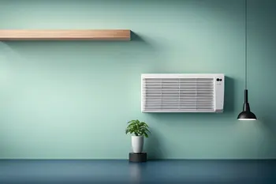

- 


Notre entreprise assure la vente ainsi que l'installation des systèmes de climatisation. Nous effectuons la maintenance et l'entretien de chauffage solaire, thermique et photovoltaïque ainsi que tous les travaux d'électricité générale.
Rénovez votre maison pour 1€*. Notre cabinet vous accompagne dans le financement de votre rénovation énergétique. Notre programme de rénovation énergétique est un dispositif qui s’inscrit dans le cadre des certificats d’économies d’énergie CEE. Ce dispositif a été mis en place depuis plus de deux ans en France.
Dépannage de chauffage climatisation (vente, installation)
chauffage solaire, thermique, photovoltaïque
électricité générale
EAU CHAUDE SANITAIRE LChoisissez le chauffe-eau thermodynamique pour la distribution d'eau chaude sanitaire dans votre maison sans interruption et à une température précise et constante à toute heure de la journée.
Le chauffe-eau thermodynamique est la solution écologique et économique de référence. Vous pouvez réaliser jusqu'à 50% d’économie sur votre facture d’électricité en utilisant un chauffe-eau thermodynamique. Utilisant les calories présentes dans l’air pour chauffer votre eau, le cumulus thermodynamique est une installation écologique et abordable.
Le chauffe-eau thermodynamique, ou CET, capte l’énergie gratuite présente dans l’air grâce à son fonctionnement comparable à une pompe à chaleur aérothermique, ce qui lui permet de consommer jusqu’à 3 fois moins d’énergie qu’un chauffe-eau électrique.
Un ballon thermodynamique émet 10 fois moins de CO2 qu’un chauffe-eau fonctionnant au gaz ou au fioul selon la marque retenue. Comme il ne rejette quasiment pas de gaz à effet de serre, son impact sur l’environnement est minime. L’échangeur restitue ensuite la chaleur créée au ballon d’eau pour produire de l’eau chaude sanitaire. Le processus se répète chaque fois que le fluide redevient liquide. Si les températures extérieures sont trop faibles en hiver, un système électrique prend le relais du CET, de même si votre consommation connaît un bref pic.
Le chauffe-eau thermodynamique présente son meilleur rendement à des températures comprises entre -5°C et 35°C. S’il fait plus froid chez vous l’hiver, vous devrez coupler votre CET avec un système de chauffage électrique de l’eau. Cette solution de secours reste dédiée aux situations occasionnelles. Si vous utilisez votre chauffe-eau thermodynamique dans des conditions optimales, sa consommation d’électricité sera réduite. Pour installer un chauffe-eau thermodynamique, nous réalisons trois types de raccordement : électrique, hydraulique et aéraulique.